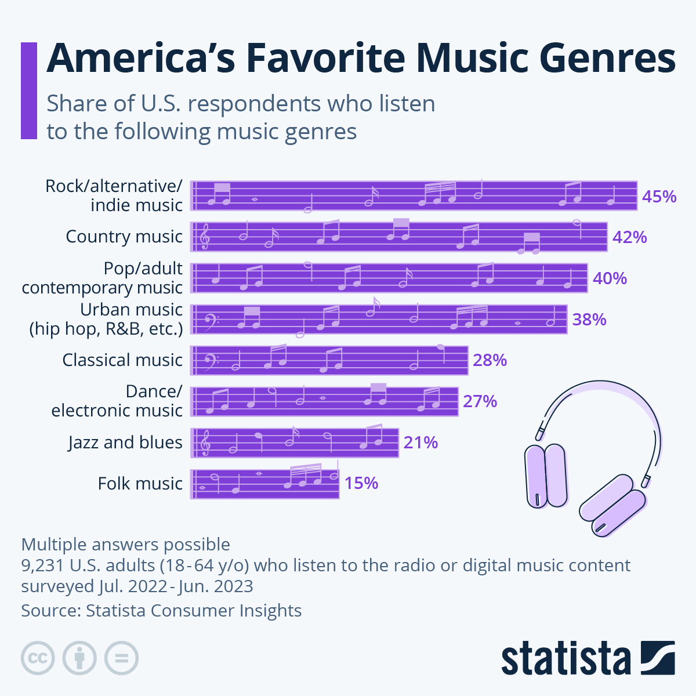

I first wanted to make this as diverse an assortment of songs as possible, so I asked GPT-4 to give me a list.
Me: Give me five songs that are completely different from each other
GPT: Here are five songs that are distinct in style, genre, and mood, each representing a unique musical experience:
“Bohemian Rhapsody” by Queen - This song is a blend of rock, ballad, and opera, making it a standout example of musical eclecticism. It switches from a slow piano intro to a mock opera and then into hard rock, all within six minutes.
“Summertime” by Ella Fitzgerald and Louis Armstrong - A classic jazz number characterized by its smooth, melodic lines and the distinctive voices of Fitzgerald and Armstrong. This song is often associated with a laid-back, sultry summer atmosphere.
“Hotline Bling” by Drake - A contemporary R&B song with a catchy melody and danceable beats. The song is known for its minimalist production and became famous for its music video featuring Drake’s dance moves.
“Smells Like Teen Spirit” by Nirvana - A grunge rock anthem that captured the spirit of the early ’90s youth and rebellion. Its raw guitar riffs and energetic drums are instantly recognizable.
“Adagio for Strings” by Samuel Barber - A classical piece composed for string orchestra. This somber, slow-paced composition is profoundly emotional and has been used in numerous movies and ceremonies due to its deep, reflective quality.
Each of these songs not only represents a different genre but also invokes a unique set of emotions and has made its own impact on music history.
Separate Thread
Me: I want you to analyze and rate different music. I want you to break down each song that I give you into detailed analysis about the various parts and aspects of the song and how it conforms to your definition of good music. Finally, give it a specific grade on a scale to 10
…
Me: I want you to give me your definition of good music that you will adhere to and be extremely critical and specific when you do the analysis
GPT: Certainly! My approach to analyzing music critically and specifically will consider several key aspects:
Composition and Structure: Good music often exhibits a well-crafted structure that includes an introduction, verses, choruses, and perhaps a bridge or instrumental solo. Effective transitions between these sections and a satisfying resolution or outro also contribute to a song’s quality. Lyrics: In songs where lyrics are present, they should be meaningful, cohesive, and well-matched with the music. Good lyrics typically evoke emotions or tell a story, and they should do so with a degree of originality and poetic craft. Harmony and Melody: The harmonic foundation should support the melody and enhance the overall mood and emotional impact of the song. A good melody is memorable, suits the lyrical content, and is dynamically interesting. Harmony that is both appropriate to the style and creatively used can elevate a piece. Rhythm and Tempo: The rhythmic structure should suit the style and mood of the music. Good music often features a well-defined rhythm that complements the melody and harmony, and uses tempo changes effectively to highlight different sections of the song. Instrumentation and Arrangement: Effective use of instruments and their arrangement can greatly enhance the listener’s experience. This includes how well the instruments blend together, the quality of sound production, and how they contribute to the overall texture of the song. Production Quality: This involves the technical aspects of recording, mixing, and mastering. A well-produced song should have clear and balanced audio quality, where no element overshadows another unless intentionally done for artistic effect. Innovation and Creativity: Good music often introduces new ideas or reinterprets existing ones in an original way. This can involve inventive use of scales, chords, rhythms, or production techniques that challenge the norm and push the genre forward. Emotional Impact and Engagement: Ultimately, good music resonates on an emotional level. It should be able to engage listeners, evoke responses, and leave a lasting impression. Cohesion: All elements of the song should work together cohesively. Even if a song is ambitious or complex, its parts should unify into a coherent whole.
Using these criteria, I’ll grade each song on a scale of 1 to 10, with 10 being a masterpiece in all respects and 1 indicating that the song has significant areas for improvement. If you have any additional criteria or specific focus areas, let me know! Now, which song would you like to start with?
Bohemian Rhapsody
It just listed off why Bohemian Rhapsody is a masterpiece and gave it a 10/10. Which is valid, but I am trying to see how it ranks these songs in comparison to one another. Because all off them were extremely famous, number 1 songs at one point. So I said that no perfect scores were allowed and re-asked.
GPT: Understood! If we adhere strictly to a policy where perfect scores are not given to allow for the possibility of improvement and critique, here’s a revised grading:
Revised Grade: 9.5/10 Reasons for not scoring a perfect 10:
Lyrics Ambiguity: While the enigmatic nature of the lyrics is part of the song’s charm, it could also be viewed as a lack of clarity in storytelling. This ambiguity might leave some listeners puzzled about the song’s meaning and intent. Cohesion Challenge: Given its varied sections and dramatic shifts in style and tone, some listeners might find “Bohemian Rhapsody” less cohesive compared to more traditionally structured songs. This could affect its accessibility and immediate appeal to a broader audience.
These points consider that while “Bohemian Rhapsody” is innovative and emotionally impactful, there is room for subjective critique regarding its lyrical clarity and structural cohesion. This adjustment in grading reflects a more critical stance, acknowledging its minor potential areas for improvement.
I really like how it responded because it actually gave the “areas for improvement. I am curious to see what these will be for the other songs. If they’re more critical, nicer, etc.
Summertime
GPT: “Summertime” performed by Ella Fitzgerald and Louis Armstrong is a classic rendition of a song originally composed by George Gershwin for the opera “Porgy and Bess.” This version is renowned for its soulful depth and jazz interpretation. Here’s a breakdown based on the outlined criteria:
Composition and Structure The song features a simple, yet effective A-B-A structure, which suits the lulling, lyrical content of the song. The repeated lines and musical phrases help evoke the song’s tranquil, summery feel.
Lyrics “Summertime” has poignant, evocative lyrics that paint a vivid picture of ease and abundance. The words are deeply resonant, conveying warmth and the promise of life’s simplicity and potential.
Harmony and Melody The melody is hauntingly beautiful, flowing smoothly atop a harmonious backdrop that mixes minor and major tones to create a feeling of both comfort and melancholy. Fitzgerald’s and Armstrong’s vocal lines interweave elegantly with the underlying chords.
Rhythm and Tempo The tempo is slow and steady, reflecting the languid heat of summer and enhancing the song’s dreamlike quality. The rhythm section provides a gentle, swaying base that complements the vocal performances perfectly.
Instrumentation and Arrangement Instrumentation in this version is rich but understated, featuring subtle brass, a gentle piano, and minimalistic but effective drumming. Fitzgerald’s and Armstrong’s voices are the central instruments, with each bringing a unique texture that adds depth to the arrangement.
Production Quality The production on this track is excellent, capturing the intimate chemistry between Fitzgerald and Armstrong while maintaining clarity between the vocal and instrumental components. The balance allows each element to shine without overpowering the others.
Innovation and Creativity While “Summertime” itself is a standard, this interpretation by Fitzgerald and Armstrong is creative in its vocal delivery and subtle jazz influences. They transform the song with their unique styles, making it distinctly their own.
Emotional Impact and Engagement The emotional delivery is powerful; Fitzgerald’s smooth, comforting voice paired with Armstrong’s raspy, emotive depth creates a rich, emotional experience that deeply engages the listener.
Cohesion All elements of this rendition work cohesively to support the song’s soothing, soulful theme. The artists’ interpretations and the arrangement choices all serve the emotional and thematic intent of the song.
Grade: 9/10 Reasons for not scoring a perfect 10:
Standardization: While beautifully performed, the song adheres closely to the traditional jazz form without significant deviation or innovation in the musical structure itself. For some, this might translate to a lack of bold creative risks. Stylistic Specificity: The jazz style is exquisitely executed but might not appeal universally. Its traditional sound and pacing may not resonate with those seeking more contemporary or varied interpretations.
This rendition of “Summertime” is certainly a masterpiece of jazz vocal performance, but these critiques acknowledge the potential limitations in appeal and innovation. If you have more songs in mind or other insights you’d like to explore, feel free to share!
Hotline Bling
Now, this is kind of what made me think of this idea. I had a bit of a feeling that 21st century pop, and even more clearly hip-hop, would get more criticism in this kind of exercise. Let’s see what it says:
GPT: “Hotline Bling” by Drake is a modern pop track known for its catchy hooks and distinctive, minimalistic production. It marks a departure from Drake’s typical rap style, focusing more on melody and rhythm. Here’s the detailed analysis based on the criteria:
Composition and Structure “Hotline Bling” features a relatively simple structure, common in pop music, consisting of verses and a chorus that repeats frequently. The song lacks a bridge or significant variation in its sections, which emphasizes its hook and lyrical theme.
Lyrics The lyrics of “Hotline Bling” reflect themes of lost love and nostalgia, focusing on the changes in behavior of a former lover who now calls him only when she needs something. The lyrics are straightforward and repetitive, which enhances the song’s catchiness but might lack depth or complexity.
Harmony and Melody The melody is catchy and simple, designed to be easily memorable. The harmonic structure is minimalistic, with a looping chord progression that underpins the entire song, creating a moody, introspective vibe.
Rhythm and Tempo The rhythm is one of the song’s standout features, incorporating a slow, steady beat with dancehall influences that make it inherently groovy and easy to dance to. The tempo is moderate, aligning well with the song’s relaxed, reflective mood.
Instrumentation and Arrangement Instrumentation in “Hotline Bling” is sparse, featuring a prominent bass line, synthetic drums, and ambient, airy synths. This minimalistic approach puts a spotlight on the vocals and the rhythmic aspect, fitting the song’s emotional and stylistic tone.
Production Quality The production, handled by Nineteen85, is polished and clean, with a focus on creating a spacious soundstage that allows Drake’s vocal performance to take center stage. The subtle use of reverb and the crispness of the beats highlight the production quality.
Innovation and Creativity The song’s creativity lies in its blending of pop and dancehall elements with a minimalistic approach, which was somewhat innovative at the time of its release. It helped set a trend for simpler, more rhythm-focused tracks in mainstream music.
Emotional Impact and Engagement “Hotline Bling” has a high level of emotional engagement, primarily due to its relatable lyrics and the catchiness of its melody. It taps into feelings of longing and personal reflection, which resonate with many listeners.
Cohesion The song is highly cohesive, with every element from the lyrics to the production working together to enhance its thematic content of communication breakdown in modern relationships.
Grade: 8/10 Reasons for not scoring a perfect 10:
Lyrical Depth: While the lyrics are effective and relatable, they do not offer much depth or complexity, which could be seen as a missed opportunity to explore the song’s themes more profoundly. Structural Innovation: The song’s structure is very repetitive, which, while catchy, does not provide much in the way of variation or musical development over its duration.
“Hotline Bling” effectively uses its minimalist style and infectious rhythm to create a memorable track, though it might benefit from more lyrical or structural complexity. If you have another song in mind or more aspects to explore, I’m here to help!
Seems like my predicition was pretty true. Even though Hotline Bling was outrageously popular about a decade ago, it doesn’t fit the description of “music” as GPT has learned it.
Smells Like Teen Spirit
I think that this might be fairly similar to Bohemian Rhapsody, but maybe a little bit lower of a rating solely because it is not as universally recognized.
GPT: “Smells Like Teen Spirit” by Nirvana is a pivotal track in rock music, often credited with bringing grunge to a mainstream audience. Its raw energy and anti-establishment vibe encapsulate the spirit of the early 90s youth culture. Here’s the detailed analysis:
Composition and Structure The song has a classic grunge structure with a quiet verse and loud chorus, a technique that amplifies its emotional impact. The composition includes verses, choruses, and a bridge/solo section, which follows a typical rock song format but is executed with a distinctive intensity and rawness.
Lyrics Kurt Cobain’s lyrics in “Smells Like Teen Spirit” are famously cryptic and disjointed, with phrases that evoke a rebellious, disillusioned youth culture. The chorus, “Here we are now, entertain us,” serves as both an anthem and a critique of the generation’s apathy and sense of entitlement. The ambiguity and irony in the lyrics have invited countless interpretations.
Harmony and Melody The melody is relatively simple but highly effective, characterized by its iconic four-chord riff that combines both power and catchiness. The harmonic progression is straightforward yet potent, supporting the song’s grunge aesthetic with a sense of driving urgency.
Rhythm and Tempo The rhythm is aggressive and propulsive, with Dave Grohl’s drumming providing a solid, energetic foundation. The tempo contributes to the song’s intense energy, driving the chaotic yet controlled nature of its delivery.
Instrumentation and Arrangement Instrumentation in “Smells Like Teen Spirit” is typical for a rock band—guitar, bass, drums, and vocals—all of which are played with a high level of intensity. Cobain’s guitar is heavily distorted, creating a thick, immersive sound that became a hallmark of grunge music.
Production Quality Produced by Butch Vig, the song features a polished yet raw sound that helped define the sonic qualities of grunge. The production balances clarity with a rough edge, capturing the band’s aggressive energy while making the track accessible to a wider audience.
Innovation and Creativity The song’s approach to songwriting and production marked a departure from the more polished pop and metal that dominated the airwaves prior, making it innovative in its intent to capture a more authentic, unvarnished sound.
Emotional Impact and Engagement “Smells Like Teen Spirit” excels in creating a visceral, compelling emotional experience. Its impact is immediate and intense, capturing the angst and alienation of its era and resonating with a wide range of listeners.
Cohesion Despite its raw edge, the song is highly cohesive, with each element from the lyrics to the instruments aligning to produce a unified theme of youthful rebellion and disillusionment.
Grade: 9/10 Reasons for not scoring a perfect 10:
Lyrical Accessibility: The cryptic nature of the lyrics, while intriguing, can also alienate some listeners who prefer more straightforward or narrative-driven songwriting. Melodic Complexity: The melody, while iconic, is relatively simple and does not vary significantly throughout the song, which could be seen as a lack of melodic depth or complexity.
“Smells Like Teen Spirit” captures the essence of a cultural movement with its raw power and emotional depth, though its stylistic choices may not cater to all tastes. If you’d like to discuss another song or delve deeper into any aspect of this track, just let me know!
Honestly, even though it did not get as good of a grade as Bohemian Rhapsody, it seems like its reasons for not giving 10 are literally describing subjectivity in music, while the other songs’ criticism felt a bit more concrete.
Adagio for Strings
I am super curious how it will go about analyzing an orchestra piece. I would think it might be the highest, but let’s see:
GPT: “Adagio for Strings” by Samuel Barber is a powerful and poignant work, often described as one of the most emotional pieces of American classical music. Originally composed as the second movement of his String Quartet, Op. 11, Barber arranged it for string orchestra and it premiered in this form in 1938. Here is a detailed analysis based on the established criteria:
Composition and Structure “Adagio for Strings” is structured as a single-movement piece in the form of an adagio, which allows for sustained and expressive melodies. Its structure is simple and arch-like, with a gradual build-up to a climax followed by a resolution that mirrors the opening in a reflective and subdued manner.
Lyrics As an instrumental piece, “Adagio for Strings” does not contain lyrics but conveys deep emotion through its musical phrasing and dynamic contrasts. The lack of lyrics means that the emotional and narrative content is entirely dependent on the music’s expressive power.
Harmony and Melody The harmony is rich and moving, with a melody that is both haunting and beautiful. It progresses through a series of climbing phrases that increase in intensity, leading to a powerful and heart-wrenching climax before settling into a serene and mournful resolution.
Rhythm and Tempo The tempo is slow and deliberate, enhancing the piece’s mournful and contemplative nature. The rhythm is subtle, with the flow largely driven by the melodic line and harmonic changes rather than by any pronounced rhythmic pattern.
Instrumentation and Arrangement Barber’s arrangement for string orchestra maximizes the emotional impact of the piece. The strings play with a depth of tone and dynamic range that captures the nuances of grief and resignation, making effective use of the textural possibilities of a string ensemble.
Production Quality In orchestral performances, the production quality hinges on the conductor’s interpretation and the orchestra’s execution. Recordings generally capture the lush soundscapes and the dynamic nuances that Barber intended, essential for conveying the piece’s emotional depth.
Innovation and Creativity While the musical language of “Adagio for Strings” is not avant-garde, its emotional depth and the effectiveness with which it uses a simple, arching structure for profound emotional expression were innovative in terms of its emotional impact in the classical music repertoire.
Emotional Impact and Engagement This piece is immensely powerful emotionally, often used in solemn occasions and memorials. Its capacity to evoke deep emotional responses is unmatched, making it one of the most evocative compositions in classical music.
Cohesion The piece is highly cohesive, with every element—melody, harmony, tempo—working together to build the emotional narrative. The simplicity of its structure enhances this cohesion, with no element feeling out of place or unnecessary.
Grade: 9/10 Reasons for not scoring a perfect 10:
Complexity and Accessibility: “Adagio for Strings” is emotionally complex but structurally simple. Some listeners or critics might desire greater complexity or variation within its musical development. Innovative Techniques: While emotionally striking, the piece does not employ particularly innovative musical techniques or structures. It works within a relatively traditional framework of Western classical music, which could be seen as a limitation in terms of groundbreaking creativity.
“Adagio for Strings” by Samuel Barber is a masterpiece of emotional expression through music, capturing a universal sense of mourning and beauty. If you’d like to continue with more pieces or revisit any aspect of this analysis, feel free to let me know!
Although it got the same score as a Jazz and Rock song, it seemed like its criticism is harsher than the others. Just for further experimentation, I wanted to see how it handled a hip hop, trap song. So I asked GPT for one and it gave me “Sicko Mode” By Travis Scott and Drake. Honestly, I think it might give a review on par with the others and better than Hotline Bling.
Sicko Mode
GPT: “Sicko Mode” by Travis Scott is a standout track from his album “Astroworld,” featuring a unique structure and a collaboration with Drake. The song became widely recognized for its non-traditional format, inventive production, and the fusion of different musical ideas within a single track. Here’s a critical analysis:
Composition and Structure “Sicko Mode” is notable for its complex structure, which includes multiple beat changes and distinct sections that could almost stand as separate tracks. This episodic structure is innovative but can also be seen as disjointed, as the transitions are abrupt and the sections have starkly different vibes.
Lyrics The lyrics in “Sicko Mode” are dynamic and include a variety of themes, from success and lifestyle to personal experiences. However, the lyrical content sometimes lacks depth and coherence, jumping quickly between topics without fully exploring any. The fragmented nature of the song mirrors its structural complexity but at the expense of narrative clarity.
Harmony and Melody The track features a variety of melodic and harmonic elements, shifting significantly with each section. These changes keep the listener engaged but might also hinder the song’s musical cohesion. The melodies are catchy yet not particularly complex, relying heavily on the production and rhythmic drive.
Rhythm and Tempo Rhythmically, “Sicko Mode” is diverse, incorporating different beats that correspond to the multiple phases of the track. These shifts help create a dynamic listening experience but might feel overwhelming or erratic to some listeners due to their unpredictability.
Instrumentation and Arrangement The instrumentation is rich and layered, showcasing a broad range of samples and synthesized sounds. While this creates a textured auditory palette, it sometimes borders on being overproduced, with so many elements vying for attention that it can detract from the overall musicality.
Production Quality The production, managed by multiple producers including Hit-Boy, Tay Keith, and CuBeatz, among others, is high-quality and polished, typical of Travis Scott’s work. It’s innovative and cutting-edge, though at times it might feel like the production overshadows the songwriting and lyrical content.
Innovation and Creativity “Sicko Mode” is highly innovative, particularly in its approach to song structure and use of technology in music production. However, its experimental nature might not resonate with all audiences, as the frequent shifts can disrupt the flow and make it hard to follow.
Emotional Impact and Engagement The song is energetic and impactful, capable of capturing the listener’s attention immediately. Its energy is its strongest emotional appeal, though the lack of a consistent theme or message might limit its emotional depth for some.
Cohesion Cohesion is perhaps the most critical area for “Sicko Mode.” The track feels like a collage of different ideas that, while exciting, sometimes lacks a unifying thread. Each section, while impressive on its own, competes rather than complements, reducing the overall unity of the track.
Grade: 8/10 Reasons for not scoring a perfect 10:
Cohesion and Flow: The song’s innovative structure leads to a lack of cohesion, making it feel more like a medley of different tracks than a single, unified piece. Lyrical Depth and Clarity: The lyrics, while energetic and reflective of Travis Scott’s style, lack depth and coherence, which could be improved to add more substance to the dynamic production.
“Sicko Mode” by Travis Scott is a bold exploration of what modern hip-hop can be, pushing boundaries with its production and structure. Its strengths lie in its creativity and energy, though it could benefit from greater coherence and depth in its lyrical narrative. If there’s another song or another aspect of “Sicko Mode” you’d like to explore further, let me know!
Pretty interesting, I was fairly off with my prediction. Out of all the songs, it definitely seems to criticize Sicko Mode the most: “medley of different tracks” “dives into different topics without fully exploring any.
Conclusion
GPT: Throughout this analysis of a diverse range of songs, we’ve explored various musical genres and styles, assessing each based on composition, lyrics, harmony, rhythm, instrumentation, production quality, innovation, emotional impact, and cohesion. Here’s a summary of the analyses with a final ranking based on the grades provided, accompanied by a suggestion for improvement for each song:
“Adagio for Strings” by Samuel Barber - 9/10 Improvement: Could benefit from adding slight variations in the musical development to enhance complexity without sacrificing emotional depth.
“Bohemian Rhapsody” by Queen - 9.5/10 Improvement: Could improve by clarifying the lyrical ambiguity to enhance narrative coherence and broaden its appeal.
“Smells Like Teen Spirit” by Nirvana - 9/10 Improvement: Might incorporate more melodic complexity to enrich the musical experience without losing its raw energy.
“Summertime” by Ella Fitzgerald and Louis Armstrong - 9/10 Improvement: Could explore more adventurous arrangements to add freshness to this classic standard while maintaining its soulful essence.
“Sicko Mode” by Travis Scott - 8/10 Improvement: Would benefit from a more cohesive structure to unify its diverse sections and enhance lyrical depth.
“Hotline Bling” by Drake - 8/10 Improvement: Enhancing lyrical depth and introducing more structural variations could provide a richer listening experience.
These rankings and critiques recognize each piece’s unique contributions to music while noting potential areas for enhancement to reach even broader or more profound impacts. This exercise underscores the complexity of musical analysis and the subjective nature of what makes music resonate with its audience, each piece holding its unique place in the musical landscape…
